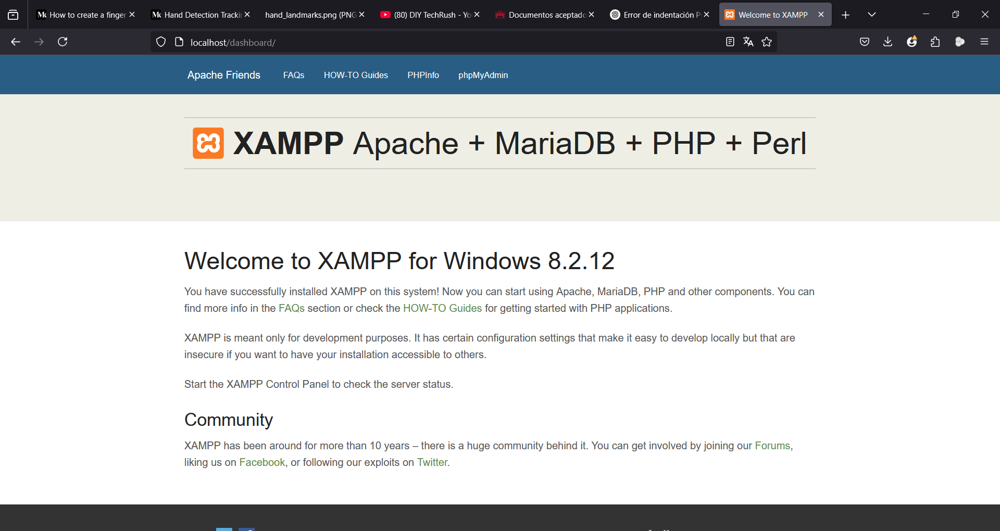

Portafolio de Actividades
Laboratorio de Redes Digitales
Departamento de Ciencias e Ingenierías | Universidad Iberoamericana Puebla, México.
Gcal
.png)
- Resumen -
En esta práctica se realizó la configuración de un servidor local en una red LAN utilizando la herramienta XAMPP. Se montó un sitio web básico habilitando el servicio Apache, y se comprobó el acceso a dicho sitio desde otros dispositivos dentro de la misma red. Se habilitó el puerto 80 en el firewall del equipo servidor para permitir las conexiones entrantes. El ejercicio tuvo como objetivo reforzar los conocimientos sobre redes locales, servidores web y comunicación entre dispositivos en una misma red.
- Introducción -
Los servidores locales son fundamentales para el desarrollo web, pruebas de aplicaciones y la gestión de recursos internos en una red. A través del uso de software como XAMPP, es posible simular un servidor real en una computadora común, sin necesidad de conexión a internet. Este tipo de configuración permite compartir recursos, como sitios web o aplicaciones, a otros dispositivos conectados a la misma red. En esta práctica se abordaron conceptos esenciales sobre redes, como la asignación de direcciones IP, la apertura de puertos y la conectividad entre dispositivos. También se exploró cómo configurar y verificar el acceso a un sitio web alojado localmente desde múltiples dispositivos.
- Materiales -
Computadora con sistema operativo Windows
Instalador de XAMPP (https://www.apachefriends.org/es/index.html)
Conexión a red inalámbrica o cableada (IBERO o red personal)
Tres dispositivos para prueba (pueden ser laptops, smartphones o tablets)
Acceso al panel de configuración del firewall de Windows
- Desarrollo -
El primer paso de la práctica consistió en la instalación de XAMPP, un software libre que integra varios servicios de servidor, como Apache, MySQL, PHP y otros. Se descargó el instalador desde el sitio oficial y se procedió a la instalación en la computadora que actuaría como servidor local. Durante el proceso, se seleccionaron los componentes necesarios, destacando principalmente el servidor Apache, que sería el encargado de servir contenido web.

Una vez instalado, se abrió el panel de control de XAMPP y se activó el servicio Apache. Este paso permitió que el equipo comenzara a funcionar como un servidor web local. Para montar un sitio web básico, se creó una carpeta dentro del directorio htdocs de XAMPP, en la cual se colocó un archivo HTML sencillo como página de prueba.
El siguiente paso fue configurar el firewall de Windows para permitir conexiones entrantes al puerto 80, que es el puerto por defecto del servicio HTTP. Se accedió al panel de configuración avanzada del firewall y se creó una nueva regla de entrada que habilitara este puerto, garantizando que otros dispositivos en la red pudieran comunicarse con el servidor sin ser bloqueados.
Posteriormente, se conectó la computadora a una red inalámbrica, ya fuera la red IBERO o una red compartida desde un celular. Se utilizó el comando ipconfig desde la terminal de Windows para identificar la dirección IP local asignada al equipo servidor. Esta IP fue anotada, ya que sería la forma de acceder al sitio desde otros dispositivos.
Finalmente, se tomaron tres dispositivos distintos, todos conectados a la misma red que el servidor. En cada uno, se abrió un navegador web y se ingresó la dirección IP local del servidor en la barra de direcciones. En todos los casos, se cargó correctamente el sitio web alojado en la carpeta htdocs, demostrando que la configuración fue exitosa y que el servidor estaba compartiendo contenido dentro de la red local.

Construcción
El proceso de construcción del servidor local incluyó la instalación y activación de XAMPP, la habilitación del servicio Apache, la creación de una página web básica y su colocación en el directorio correspondiente. Asimismo, se configuró el firewall para permitir conexiones externas al puerto 80, y se identificó la IP del servidor para compartirla con los demás dispositivos. La validación final se hizo al acceder desde tres dispositivos diferentes, verificando así el alcance del servidor dentro de la red
- Resultados -
El servidor local fue configurado correctamente utilizando XAMPP. El servicio Apache se ejecutó sin errores. Se creó una página web de prueba accesible desde la red. El puerto 80 fue habilitado exitosamente en el firewall del equipo. La IP local del servidor fue identificada y utilizada correctamente. Tres dispositivos distintos accedieron sin problemas al sitio web montado, validando que el servidor funcionaba dentro de la red local.
- Conclusiones -
La práctica permitió comprender el proceso completo de configuración de un servidor web local utilizando XAMPP, desde la instalación inicial hasta la verificación del acceso desde otros dispositivos. Se reforzaron conceptos importantes de redes como la gestión de puertos, la identificación de direcciones IP y la importancia del firewall en la seguridad de las comunicaciones. Esta actividad demuestra que con herramientas accesibles es posible simular entornos de servidor reales para pruebas, desarrollo web y formación técnica en redes. La posibilidad de acceder al sitio desde distintos dispositivos validó la correcta configuración del entorno local y la funcionalidad del servidor montado.
- Referencias -
Microchip AVR® microcontroller primer: programming and interfacing, third edition (synthesis lectures on digital circuits and systems), BARRETT, Steven F. Pack Daniel J., Editorial Morgan & Claypool, 2019.
K. He, X. Zhang, S. Ren and J. Sun, "Deep Residual Learning for Image Recognition," 2016 IEEE Conference on Computer Vision and Pattern Recognition (CVPR), Las Vegas, NV, USA, 2016, pp. 770-778, doi: 10.1109/CVPR.2016.90.
J. D. Hunter, "Matplotlib: A 2D Graphics Environment," in Computing in Science & Engineering, vol. 9, no. 3, pp. 90-95, May-June 2007, doi: 10.1109/MCSE.2007.55.